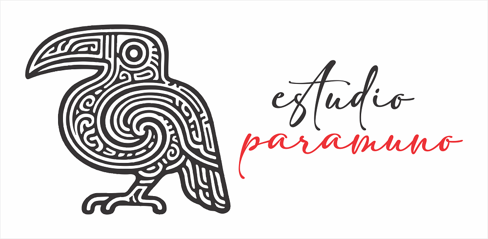

Estudio paramuno
Home > Estudio paramuno
Estudio paramuno is the space where my artistic, graphic, sonic, and material work takes shape. Located on the mist-covered slopes of Quisquiza, in the Colombian Andes, it is a small independent atelier where I compose, perform, and record music; make instruments; draw, design, and photograph; create puppets; and write fiction. It is also a space for experimenting with reclaimed materials and low-tech techniques.

At the intersection of memory, ecology, and imagination, Estudio paramuno explores forms of creation that are slow, manual, and territorial. Bark, bone, ash, thread, and recycled materials often serve as starting points — not for traditional artworks, but for objects and narratives that question how we make, preserve, and transmit meaning.
Finished works coexist here with projects in development and explorations that do not necessarily lead to a completed work. These pages bring together both the results and the processes behind them.
Music
At Estudio paramuno, I compose, perform, and record original music using traditional instruments, instruments I have built or modified, and other experimental sound sources. I am particularly interested in their expressive possibilities, timbres, tunings, and playing techniques, as well as in creating melodies and musical pieces under deliberately simple conditions. This work includes solo compositions, soundtracks, and explorations of environmental sounds. Finished works coexist with projects in development and experiments with materials, repertoires, and ways of playing. The recordings bring together this current production and work from earlier periods.
See all the recordings.
Fiction writing
Fiction writing also has a place within Estudio paramuno. It does not appear here as an exercise in escape, but as another form of exploration: a practice of critical imagination that works with memory, displacement, history, and its fractures. Novels, short stories, and uchronias emerge in this space as ways of narrating what might have been, what was distorted, or what remained at the margins, extending—through a different language—many of the questions that traverse the rest of the studio.
See all the fiction.
Photography
Photography is part of this atelier as a practice of slow observation and the construction of series. Rather than isolated images, I am interested in the links between them: almost imperceptible changes, the details that sustain a landscape, the traces of cycles, the textures of matter, and the signs of what disappears. Gathered into books and visual sequences, these works engage with the territorial and ecological dimension of Estudio paramuno, extending its search into another form of record and narrative.
See all the photography.